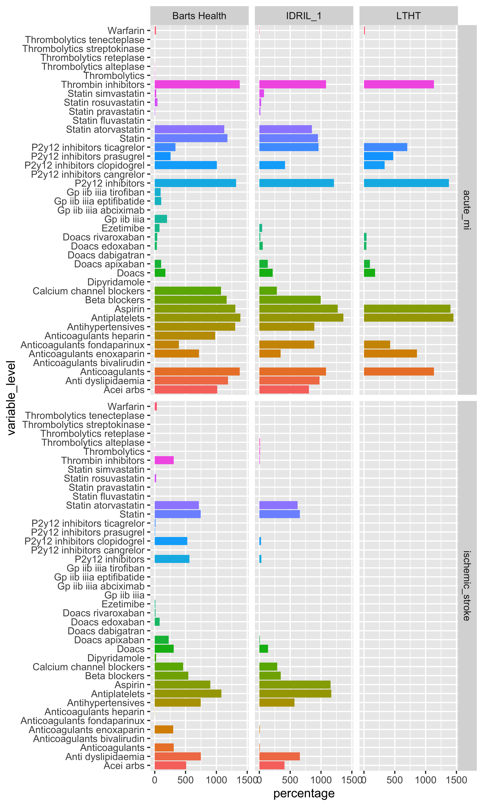
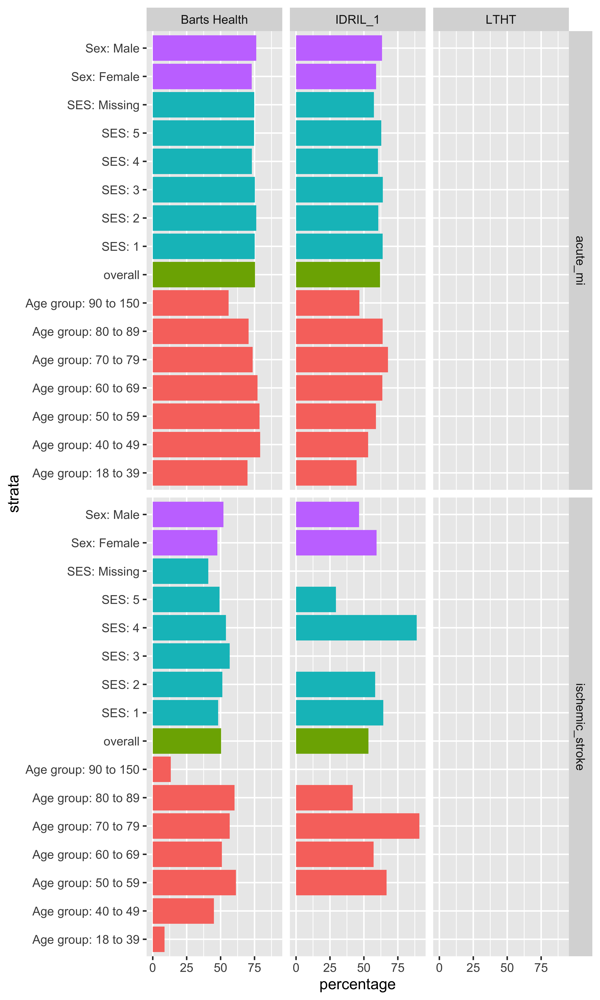
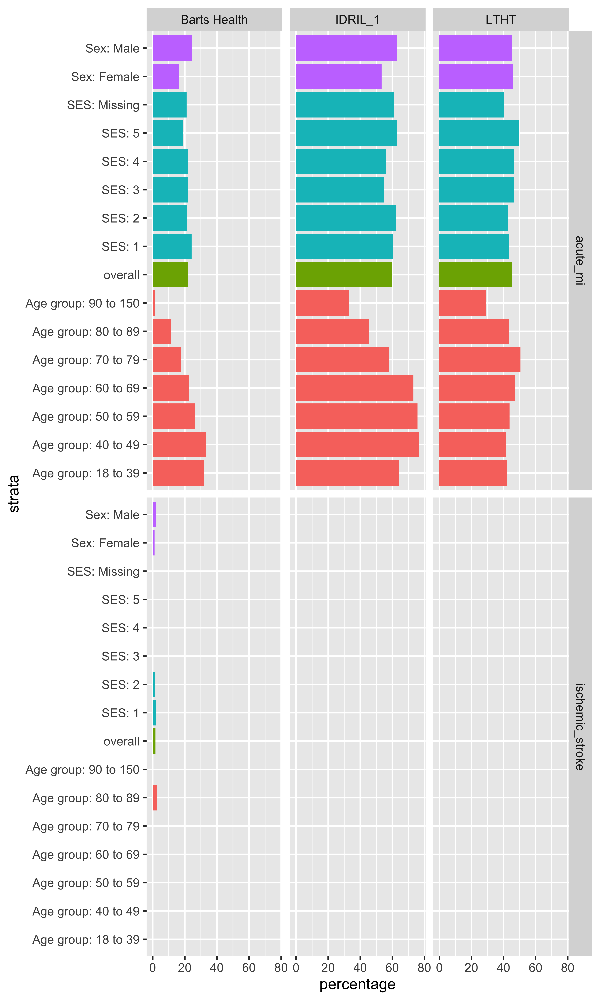
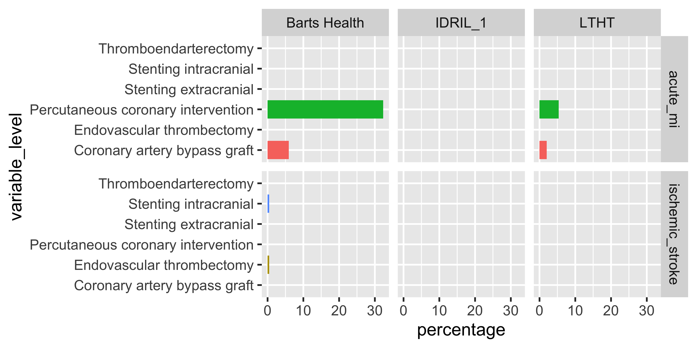

MI/Stroke Inpatient
Database metadata
Table 1: Database metadata.
Estimate | Database name | ||
|---|---|---|---|
Barts Health | IDRIL_1 | LTHT | |
General | |||
Snapshot date | 2026-03-11 | 2026-03-11 | 10/03/2026 |
Person count | 3,450,391 | 1,722,120 | 1,554,441 |
Vocabulary version | v5.0 27-AUG-25 | v5.0 27-FEB-25 | v5.0 27-AUG-25 |
Cdm | |||
Source name | Barts Health Data Warehouse | IDRIL | LTHT OMOP database |
Version | 5.4 | 5.4 | 5.4 |
Holder name | Barts Health NHS Trust | Lancashire Teaching Hospitals NHS Foundation Trust | LTHT |
Release date | 2026-02-16 | 2026-03-04 | 29/12/2025 |
Description | EDW OMOP Research | Multi-source secondary care dataset | LTHT OMOP database |
Documentation reference | – | http://omop-lsc.surge.sh/ | Not available - source is PPM |
Observation period | |||
N | 3,450,391 | 1,722,120 | 1,554,441 |
Start date | 2012-01-01 | 1905-09-21 | 15/12/1987 |
End date | 2026-02-16 | 2026-03-04 | 29/12/2025 |
Cdm source | |||
Type | sql server | sql server | sql server |
Package | CDMConnector | CDMConnector | CDMConnector |
Write catalog | omop | – | LTHT_OMOP |
Write schema | omop | dev_if | Achilles_results |
Write prefix | bartshealth | iwf_ | heronmeds_ |
Demographics characterisation myocardial infarction
Table 2: Demographics characterisation at first record of Myocardial infarction.
Variable name | Variable level | Estimate name | CDM name | ||
|---|---|---|---|---|---|
Barts Health | IDRIL_1 | LTHT | |||
Number records | – | N | 22,223 | 2,906 | 10,264 |
Number subjects | – | N | 11,421 | 2,906 | 10,264 |
Cohort start date | – | Median [Q25 - Q75] | 2023-12-12 [2022-11-29 - 2024-12-07] | 2023-12-11 [2022-12-24 - 2024-12-14] | 07/12/2023 [07/12/2022 - 05/12/2024] |
Range | 2022-01-01 to 2026-02-15 | 2022-01-01 to 2026-03-02 | – | ||
Cohort end date | – | Median [Q25 - Q75] | 2023-12-14 [2022-11-30 - 2024-12-09] | 2023-12-18 [2023-01-01 - 2024-12-24] | 07/12/2023 [07/12/2022 - 05/12/2024] |
Range | 2022-01-01 to 2026-02-15 | 2022-01-02 to 2026-03-02 | – | ||
Sex | Female | N (%) | 6,314 (28.41%) | 992 (34.14%) | 3,182 (31.00%) |
Male | N (%) | 15,909 (71.59%) | 1,914 (65.86%) | 7,082 (69.00%) | |
Age | – | Median [Q25 - Q75] | 63 [54 - 74] | 73 [62 - 82] | 67 [57 - 77] |
Mean (SD) | 63.95 (14.15) | 71.37 (14.09) | 67.03 (13.61) | ||
Range | 18 to 116 | 18 to 105 | – | ||
Age group | 18 to 39 | N (%) | 801 (3.60%) | 56 (1.93%) | 210 (2.05%) |
40 to 49 | N (%) | 2,656 (11.95%) | 147 (5.06%) | 855 (8.33%) | |
50 to 59 | N (%) | 5,317 (23.93%) | 416 (14.32%) | 2,088 (20.34%) | |
60 to 69 | N (%) | 5,692 (25.61%) | 588 (20.23%) | 2,610 (25.43%) | |
70 to 79 | N (%) | 4,180 (18.81%) | 769 (26.46%) | 2,434 (23.71%) | |
80 to 89 | N (%) | 2,896 (13.03%) | 707 (24.33%) | 1,637 (15.95%) | |
90+ | N (%) | 681 (3.06%) | 223 (7.67%) | 430 (4.19%) | |
Ethnicity | *Patient not asked | N (%) | – | 61 (2.10%) | – |
*Patient not asked / not known | N (%) | – | 72 (2.48%) | – | |
312508.0 | N (%) | 531 (2.39%) | – | – | |
3767639.0 | N (%) | 947 (4.26%) | – | – | |
3767646.0 | N (%) | 302 (1.36%) | – | – | |
A | N (%) | 7,119 (32.03%) | – | – | |
Any other asian background | N (%) | – | 32 (1.10%) | 119 (1.16%) | |
Any other black background | N (%) | – | <5 | – | |
Any other ethnic group | N (%) | – | 16 (0.55%) | 262 (2.55%) | |
Any other mixed background | N (%) | – | 8 (0.28%) | 17 (0.17%) | |
Any other white background | N (%) | – | 41 (1.41%) | 252 (2.46%) | |
B | N (%) | 222 (1.00%) | – | – | |
Bangladeshi | N (%) | – | – | 44 (0.43%) | |
Bangladeshi or british banglad | N (%) | – | <5 | – | |
Black - african | N (%) | – | – | 39 (0.38%) | |
Black - caribbean | N (%) | – | – | 37 (0.36%) | |
Black - other | N (%) | – | – | 16 (0.16%) | |
Black/black british african | N (%) | – | <5 | – | |
Black/black caribbean | N (%) | – | 9 (0.31%) | – | |
C | N (%) | 2,624 (11.81%) | – | – | |
Chinese | N (%) | – | <5 | 14 (0.14%) | |
D | N (%) | 74 (0.33%) | – | – | |
E | N (%) | 23 (0.10%) | – | – | |
F | N (%) | 62 (0.28%) | – | – | |
G | N (%) | 158 (0.71%) | – | – | |
H | N (%) | 1,722 (7.75%) | – | – | |
Indian | N (%) | – | – | 152 (1.48%) | |
Indian or british indian | N (%) | – | 109 (3.75%) | – | |
J | N (%) | 1,945 (8.75%) | – | – | |
K | N (%) | 2,648 (11.92%) | – | – | |
L | N (%) | 1,683 (7.57%) | – | – | |
M | N (%) | 767 (3.45%) | – | – | |
Mixed white & asian | N (%) | – | <5 | – | |
Mixed white & black african | N (%) | – | <5 | – | |
Mixed white & black caribbean | N (%) | – | <5 | – | |
N | N (%) | 847 (3.81%) | – | – | |
Not collected | N (%) | – | – | 110 (1.07%) | |
Not given | N (%) | – | – | 1,046 (10.19%) | |
Not stated | N (%) | – | – | 243 (2.37%) | |
Not stated e.g. unwilling to s | N (%) | – | 29 (1.00%) | – | |
P | N (%) | 429 (1.93%) | – | – | |
Pakistani | N (%) | – | – | 649 (6.32%) | |
Pakistani or british pakistani | N (%) | – | 58 (2.00%) | – | |
R | N (%) | 120 (0.54%) | – | – | |
Unknown | N (%) | – | <5 | 764 (7.44%) | |
White - british | N (%) | – | – | 6,427 (62.62%) | |
White - irish | N (%) | – | – | 49 (0.48%) | |
White and asian | N (%) | – | – | 12 (0.12%) | |
White and black african | N (%) | – | – | <6 | |
White and black caribbean | N (%) | – | – | 7 (0.07%) | |
White british | N (%) | – | 2,437 (83.86%) | – | |
White irish | N (%) | – | 17 (0.58%) | – | |
Ses | 1 | N (%) | 5,188 (23.35%) | 603 (20.75%) | 3,406 (33.18%) |
2 | N (%) | 8,078 (36.35%) | 497 (17.10%) | 1,527 (14.88%) | |
3 | N (%) | 3,776 (16.99%) | 361 (12.42%) | 1,663 (16.20%) | |
4 | N (%) | 2,081 (9.36%) | 590 (20.30%) | 1,909 (18.60%) | |
5 | N (%) | 1,298 (5.84%) | 637 (21.92%) | 1,687 (16.44%) | |
Missing | N (%) | 1,802 (8.11%) | 218 (7.50%) | 72 (0.70%) | |
Prior observation | – | Median [Q25 - Q75] | 3,157 [164 - 4,119] | 9,163 [6,737 - 10,394] | 362 [0 - 6,096] |
Mean (SD) | 2,544.46 (1,831.46) | 8,055.99 (3,590.47) | 2,995.39 (3,619.40) | ||
Range | 0 to 5,157 | 0 to 29,568 | 0 to 11,901 | ||
Future observation | – | Median [Q25 - Q75] | 639 [285 - 1,075] | 499 [109 - 964] | 4 [1 - 137] |
Mean (SD) | 679.60 (456.47) | 571.55 (476.54) | 151.98 (294.28) | ||
Range | 0 to 1,507 | 0 to 1,523 | 0 to 1,443 | ||
Days in cohort | – | Median [Q25 - Q75] | 1 [1 - 3] | 6 [2 - 12] | 1 [1 - 1] |
Mean (SD) | 2.74 (3.89) | 9.55 (13.52) | 1.07 (1.12) | ||
Range | 1 to 36 | 1 to 322 | 1 to 28 | ||
Days to next record | – | Median [Q25 - Q75] | 0 [-2 - 0] | – | – |
Mean (SD) | -1.83 (4.08) | – | – | ||
Range | -35 to 0 | – | – | ||
Prior ischemic stroke (-30 to -1) | Ischemic stroke | N (%) | <5 | – | 0 (0.00%) |
Stroke
Variable name | Variable level | Estimate name | CDM name | ||
|---|---|---|---|---|---|
Barts Health | IDRIL_1 | LTHT | |||
Number records | – | N | 1,131 | 60 | 0 |
Number subjects | – | N | 521 | 60 | 0 |
Cohort start date | – | Median [Q25 - Q75] | 2024-05-02 [2023-06-13 - 2025-05-19] | 2023-12-09 [2022-10-14 - 2024-10-15] | – |
Range | 2022-01-04 to 2026-02-12 | 2022-01-22 to 2026-01-01 | – | ||
Cohort end date | – | Median [Q25 - Q75] | 2024-05-09 [2023-06-13 - 2025-05-19] | 2023-12-09 [2022-10-14 - 2024-10-15] | – |
Range | 2022-01-04 to 2026-02-12 | 2022-01-22 to 2026-01-01 | – | ||
Sex | Female | N (%) | 447 (39.52%) | 32 (53.33%) | – |
Male | N (%) | 684 (60.48%) | 28 (46.67%) | – | |
Age | – | Median [Q25 - Q75] | 67 [57 - 78] | 70 [59 - 82] | – |
Mean (SD) | 66.04 (16.05) | 68.68 (16.25) | – | ||
Range | 19 to 100 | 21 to 92 | – | ||
Age group | 18 to 39 | N (%) | 92 (8.13%) | <5 | – |
40 to 49 | N (%) | 82 (7.25%) | <5 | – | |
50 to 59 | N (%) | 181 (16.00%) | 9 (15.00%) | – | |
60 to 69 | N (%) | 261 (23.08%) | 14 (23.33%) | – | |
70 to 79 | N (%) | 261 (23.08%) | 11 (18.33%) | – | |
80 to 89 | N (%) | 209 (18.48%) | 12 (20.00%) | – | |
90+ | N (%) | 45 (3.98%) | 7 (11.67%) | – | |
Ethnicity | *Patient not asked / not known | N (%) | – | <5 | – |
312508.0 | N (%) | 19 (1.68%) | – | – | |
3767639.0 | N (%) | 100 (8.84%) | – | – | |
3767646.0 | N (%) | 19 (1.68%) | – | – | |
A | N (%) | 357 (31.56%) | – | – | |
Any other ethnic group | N (%) | – | <5 | – | |
Any other white background | N (%) | – | <5 | – | |
B | N (%) | 6 (0.53%) | – | – | |
C | N (%) | 108 (9.55%) | – | – | |
D | N (%) | 7 (0.62%) | – | – | |
E | N (%) | <5 | – | – | |
G | N (%) | 7 (0.62%) | – | – | |
H | N (%) | 48 (4.24%) | – | – | |
Indian or british indian | N (%) | – | <5 | – | |
J | N (%) | 89 (7.87%) | – | – | |
K | N (%) | 87 (7.69%) | – | – | |
L | N (%) | 68 (6.01%) | – | – | |
M | N (%) | 91 (8.05%) | – | – | |
N | N (%) | 70 (6.19%) | – | – | |
P | N (%) | 43 (3.80%) | – | – | |
Pakistani or british pakistani | N (%) | – | <5 | – | |
R | N (%) | 8 (0.71%) | – | – | |
White british | N (%) | – | 52 (86.67%) | – | |
Ses | 1 | N (%) | 282 (24.93%) | 14 (23.33%) | – |
2 | N (%) | 429 (37.93%) | 12 (20.00%) | – | |
3 | N (%) | 164 (14.50%) | 8 (13.33%) | – | |
4 | N (%) | 76 (6.72%) | 9 (15.00%) | – | |
5 | N (%) | 65 (5.75%) | 17 (28.33%) | – | |
Missing | N (%) | 115 (10.17%) | – | – | |
Prior observation | – | Median [Q25 - Q75] | 3,690 [1,879 - 4,424] | 8,999 [3,906 - 10,290] | – |
Mean (SD) | 3,055.37 (1,735.36) | 7,105.43 (4,170.19) | – | ||
Range | 0 to 5,151 | 0 to 13,412 | – | ||
Future observation | – | Median [Q25 - Q75] | 468 [157 - 931] | 650 [331 - 1,186] | – |
Mean (SD) | 567.47 (450.97) | 741.47 (472.92) | – | ||
Range | 0 to 1,503 | 3 to 1,475 | – | ||
Days in cohort | – | Median [Q25 - Q75] | 1 [1 - 1] | 1 [1 - 2] | – |
Mean (SD) | 1.12 (1.46) | 1.28 (0.49) | – | ||
Range | 1 to 28 | 1 to 3 | – | ||
Days to next record | – | Median [Q25 - Q75] | 0 [0 - 0] | – | – |
Mean (SD) | -0.10 (1.40) | – | – | ||
Range | -20 to 0 | – | – | ||
Prior mi (-30 to -1) | Acute mi | N (%) | 39 (3.56%) | – | – |
RESULTS (ABM)
##Supplementary Table 1: Features of each hospital
##Table 1: General description of the populations: AIS and AMI counts and sociodemographic and comorbidities (for AIS and AMI)
##Table 2: the pattern of use of medications (antiplatelets, anticoagulants, statins, thrombolytics) (for AIS and AMI)across centres

MI and AIS: statins use AIS-AF: DOAC, warfarin
Table 3: the patterns of use of procedures (PCI, storke_procedures_rx (EVT, intra and extracranial stenting))
##Table 4: timing to reperfussion treatment (admission>>thrombolytics, admission>PCI/stroke_procedures_rx) (Lancshire). #Figure 1: differences for age #Figure 2: differences for SES
##Figure 3 and 4: statins use (for AIS and AMI): differences for sex and age
Statin

P2y12 inhibitors ticagrelor

##Figure 5 and 6: Ticagrelor vs clopidogrel (for AIS and AMI): differences for sex and age
{r, fig.height=10} # xs <- x |> # dplyr::filter(variable_level %in% c("P2y12 inhibitors ticagrelor", "P2y12 inhibitors clopidogrel")) |> # dplyr::mutate( # strata_group = stringr::str_extract(strata, "^[^:]+") # ) # ggplot2::ggplot(data = xs, mapping = ggplot2::aes(x = strata, y = percentage, fill = strata_group)) + # ggplot2::geom_col() + # ggplot2::coord_flip() + # ggplot2::facet_grid(cohort_name ~ cdm_name) + # ggplot2::theme(legend.position = "none") #

##Figure 7 and 8 (AIS-AF): Anticoagulants use (DOAC vs warfarin): differences for sex and age
##Table 5: Outcomes (for AIS and AMI)>> discharge destination and death